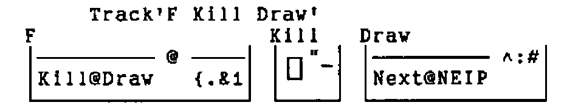
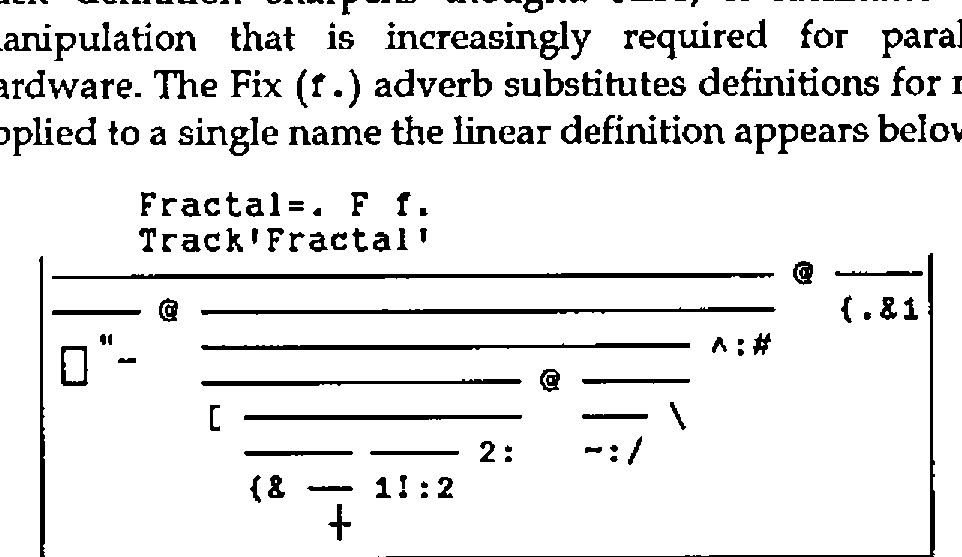

A Fractal Verb in J
Vector 12:2, page 131
Transcribed from the printed issue; not yet reviewed. Read it in the PDF of the issue, page 131
At Christmas I sent a copy of J to a professor at Cornell College in Iowa where I went to school. I also sent this verb. It prints one line at a time like Norman Thomson’s program in Vector Vol.11 No.3 page 17.
Primitives like + and programs like F are verbs. F makes a square fractal.
F 16
┼┼┼┼┼┼┼┼┼┼┼┼┼┼┼┼
┼ ┼ ┼ ┼ ┼ ┼ ┼ ┼
┼┼ ┼┼ ┼┼ ┼┼
┼ ┼ ┼ ┼
┼┼┼┼ ┼┼┼┼
┼ ┼ ┼ ┼
┼┼ ┼┼
┼ ┼
┼┼┼┼┼┼┼┼
┼ ┼ ┼ ┼
┼┼ ┼┼
┼ ┼
┼┼┼┼
┼ ┼
┼┼
┼
Consider the sentence "She walks fast.". The adverb "fast" changes the meaning of "walk". English doesn’t need a "walkfast" verb. Consider the composition (+/). The Insert adverb (/) sticks the Plus verb (+) between each item of the argument. J doesn’t need a SUM built-in function.
J programs can be composed of nothing but verbs. You don’t have to refer to application data. Iverson calls this "tacit definition". F is a tacit program. The execution sequence is mapped by Track. In a track map each composed subverb is pegged with a horizontal line.
F=. Kill@Draw@({.&1)
Kill=. (1.0 0)"_
Draw=. Next@NEIP^:#
Next=. [ Screen
Screen=. {&' ┼' (1!:2) 2:
NEIP=. ~:/\


A verb applies to a noun on each side (like +) or to a noun on the right (like F). An adverb applies to an argument on the left (like Insert). The argument may be verb or noun. A conjunction applies to an argument on each side. The result of an adverb or conjunction is a verb. The result of a verb is a noun. Verbs, adverbs, conjunctions and nouns can all be specified with the copula (=.).
Atop (@) and Bond (&) are conjunctions. In F, Atop runs the (Kill@Draw) verb after or "atop" the ({.&1) verb. The latter is composed of Take ({.), Bond, and 1. Names of primitives are constructed from one or two characters. If two, the second is period (.) or colon. This is what ({.&1) does.
4 {. 1 5 0 3 2 3 NB. No composition, two arguments for {.
1 5 0 3
4 {. 1 NB. J supplies zeroes if necessary
1 0 0 0
{.&1 (4) NB. Composed verb ({.&1) applied to 4
1 0 0 0
The argument of F is the argument of ({.&1). If the argument is 4 the result of ({.&1) is (1 0 0 0) and (1 0 0 0) is the argument of (Kill@Draw). In Draw the Power (^:) conjunction runs (Next@NEIP) # (Tally) times. The argument of # is (1 0 0 0) as is the initial argument of (Next@NEIP).
NEIP (~:/\) makes the fractal. Not Equal (~:) is a verb. Insert (/) and Prefix (\) are adverbs. NEIP applies Not Equal Insert (~:/) to each prefix. Prefix structures its argument as a bunch of prefixes: the first item, the first two, the first three, etc.
<\ 1 0 0 0 NB. Box (<) each prefix (\)
┌─┬───┬─────┬───────┐
│1│1 0│1 0 0│1 0 0 0│
└─┴───┴─────┴───────┘
This is what J does when Not Equal Insert is applied to the last prefix (1 0 0 0) in place of Box.
| insert verb | 1 ~: 0 ~: 0 ~: 0 |
| group verbs right | 1 ~: (0 ~: (0 ~: 0)) |
0~:0 is false |
1 ~: (0 ~: 0 ) |
0~:0 is false |
1 ~: 0 |
1~:0 is true |
1 |
The result is also 1 when Not Equal Insert is applied to any other prefix. The result of NEIP on (1 0 0 0) is (1 1 1 1). In Next, Screen displays '┼┼┼┼' for (1 1 1 1), but Left ([) returns (1 1 1 1) when applied to (1 1 1 1) and '┼┼┼┼'.
NEIP 1 0 0 0
1 1 1 1
Next@NEIP 1 0 0 0
┼┼┼┼
1 1 1 1
NEIP NEIP 1 0 0 0
1 0 1 0
Next@NEIP Next@NEIP 1 0 0 0
┼┼┼┼
┼ ┼
1 0 1 0
Next@NEIP ^: # 1 0 0 0
┼┼┼┼
┼ ┼
┼┼
┼
1 0 0 0
F 4
┼┼┼┼
┼ ┼
┼┼
┼
A scalar verb like Minus (-) is applied to each item of a list. An underbar (_) touching a number is a negative sign, not a verb. Scalar technique is extended to all verbs with the Rank (") conjunction. Rank applies a non-scalar verb to each part of its argument.
Tacit definition sharpens thought. Also, it facilitates the kind of pre-chip manipulation that is increasingly required for parallel and non-parallel hardware. The Fix (f.) adverb substitutes definitions for names. When Track is applied to a single name the linear definition appears below the map.

The right argument of many conjunctions is executed before the left. In Fractal, ([ ——) is Next and (—— —— 2:) is Screen. Two isolated verbs are a "hook" and three are a "fork". A fork applies the first and last verbs to its argument, and then applies the middle verb to their results. A hook applies the last verb to its argument, and then applies the first verb to its argument and to the result of the last verb.
Vocabulary¶
| Verbs | Adverbs | ||
|---|---|---|---|
+ |
Plus | / |
Insert |
{. |
Take | \ |
Prefix |
i. |
Index of | f. |
Fix |
# |
Tally | Conjunctions | |
[ |
Left | @ |
Atop |
{ |
From | & |
Bond |
~: |
Not Equal | " |
Rank |
2: |
Two | " |
Constant |
- |
Minus | ^: |
Power |
< |
Box | !: |
Foreign |
F |
Map fractal | Nouns | |
Kill |
Display nothing | 1 |
One |
Draw |
Main | 0 0 |
Zero zero |
Next |
Skip '┼' and blank | _ |
Infinity |
Screen |
Display as '┼' and blank | 2 |
Two |
NEIP |
Not Equal Insert Prefix | ||
Fractal |
Map fractal | ||
Track |
Simplify boxed representation |
Two English words like A and Ad usually have nothing in common. Two J words like { and {. frequently do. From selects any. Take selects from the top or bottom. Rank is (verb"noun). Constant is (noun"noun). Foreign links the operating system. Write is 1!:2. Boxed representation is 5!:2. Underbar (_) is infinity only when isolated.